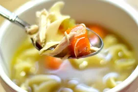

Chicken Noodle Soup

Description
Tasty homestyle Chicken Noodle Soup recipe that's just as simple as it is delicious.
Ingredients
- 2 1/2 cups wide egg noodles
- 1 teaspoon vegetable oil
- 12 cups chicken broth
- 1 1/2 tablespoons salt
- 1 teaspoon poultry seasoning
- 1 cup chopped celery
- 1 cup chopped onion
- 1/3 cup cornstarch
- 1/4 cup water
- 3 cups diced, cooked chicken meat
Steps
- Bring a large pot of lightly salted water to a boil. Add egg noodles and oil, and boil until noodles are tender, about 8 minutes. Drain, rinse under cool running water, and drain again.
- Bring broth, salt, and poultry seasoning to a boil in a Dutch oven. Stir in celery and onion; reduce the heat, cover, and simmer until vegetables have softened, about 15 minutes.
- Mix cornstarch and water together in a small bowl until cornstarch is completely dissolved; gradually stir into soup. Stir in noodles and chicken, and cook until heated through, 2 to 3 minutes.